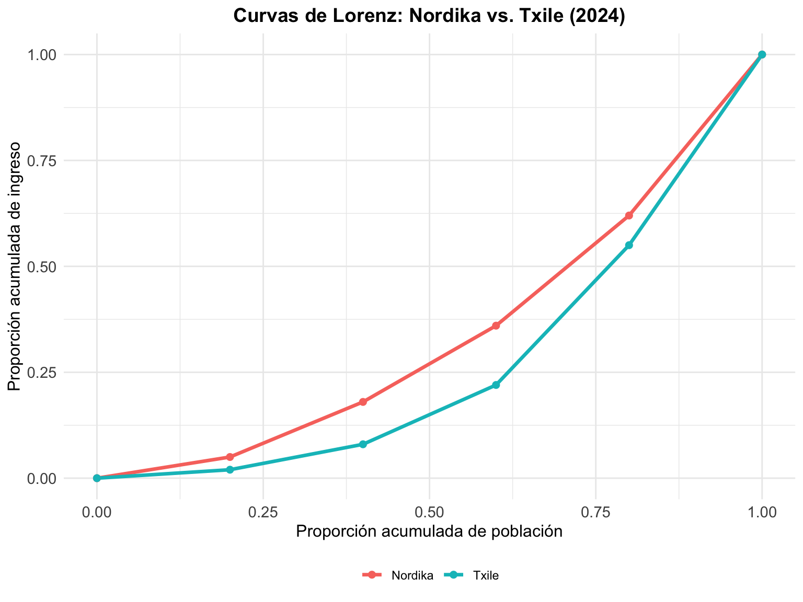

| Hogar | Ingreso Total (miles pesos) | Número de Miembros | Ingreso per Cápita | Ingreso equivalente (θ=0.5) |
|---|---|---|---|---|
| A | 800 | 4 | ||
| B | 1200 | 3 | ||
| C | 1500 | 5 | ||
| D | 2000 | 4 | ||
| E | 3000 | 6 |
Prueba Parcial - Sociología de la Desigualdad
SOL186S - Primer Semestre 2025
Important
Información general
Tienen hasta las 12:00pm para completar la prueba
Se permite el uso de calculadora y apuntes.
Es obligatorio mostrar todos los procedimientos de cálculo.
No está permitido el uso de computadores, tablets ni teléfonos celulares durante el examen
Puntaje total: 100 puntos.
1 Parte I: Conceptos y Medición
1.1 Medición de la pobreza
A continuación se presentan datos de cinco hogares con sus respectivos ingresos y número de miembros:
Considerando una línea de pobreza es de 300 mil pesos por persona y la siguiente fórmula de ingreso equivalente por tamaño del hogar, realiza los cálculos requeridos a continuación:
\[\text{Ingreso equivalente} = \frac{\text{Ingreso total del hogar}}{(\text{Número de miembros})^θ}\]
1.1.1 Calcula el ingreso equivalente de cada hogar utilizando θ = 1 y θ = 0.5. Completa la tabla con estos resultados.
| Hogar | Ingreso Total | Miembros | \(\theta = 1\) | \(\theta = 0.5\) |
|---|---|---|---|---|
| A | 800 | 4 | \(\frac{800}{4^1} = 200\) | \(\frac{800}{\sqrt{4}} = 400\) |
| B | 1200 | 3 | \(\frac{1200}{3^1} = 400\) | \(\frac{1200}{\sqrt{3}} \approx 692.8\) |
| C | 1500 | 5 | \(\frac{1500}{5^1} = 300\) | \(\frac{1500}{\sqrt{5}} \approx 670.8\) |
| D | 2000 | 4 | \(\frac{2000}{4^1} = 500\) | \(\frac{2000}{\sqrt{4}} = 1000\) |
| E | 3000 | 6 | \(\frac{3000}{6^1} = 500\) | \(\frac{3000}{\sqrt{6}} \approx 1224.7\) |
1.1.2 Calcula la tasa de pobreza (proporción de hogares pobres) para ambos valores de θ.
Respuesta:
La línea de pobreza es de 300 mil pesos por persona equivalente.
Con \(\theta = 1\), el único hogar por debajo de la línea es el hogar A (200).
\[ \text{Tasa de pobreza} = \frac{1}{5} = 0.2 = 20\% \]Con \(\theta = 0.5\), todos los hogares tienen ingresos equivalentes superiores a 300.
\[ \text{Tasa de pobreza} = 0\% \]
1.1.3 Explica conceptualmente qué representa el parámetro θ y por qué las tasas de pobreza difieren entre ambos escenarios.
Respuesta:
El parámetro \(\theta\) representa cómo se ajusta el ingreso del hogar según el tamaño del hogar, capturando las economías de escala en el consumo:
Cuando \(\theta = 1\), se asume que cada miembro adicional requiere la misma cantidad de recursos, es decir, no hay economías de escala.
Cuando \(\theta = 0.5\), se reconoce que los miembros del hogar pueden compartir recursos (vivienda, servicios, alimentos), por lo que el costo por persona disminuye.
Por esta razón, la tasa de pobreza es menor con \(\theta = 0.5\): los hogares grandes no son penalizados por su tamaño, y su ingreso ajustado refleja mejor su capacidad de consumo conjunta.
1.2 Curvas de Lorenz
A continuación se presenta el gráfico de las curvas de Lorenz para dos sociedades hipotéticas, Nordika y Txile.

A partir de este gráfico responde las siguientes preguntas:
1.2.1 Explica qué es una curva de Lorenz y cómo se interpreta en términos de la desigualdad de ingresos. ¿Qué representaría una línea diagonal de 45 grados?
Respuesta:
La curva de Lorenz es una herramienta gráfica utilizada para representar la distribución del ingreso o la riqueza en una sociedad. En el eje horizontal se muestra la proporción acumulada de la población, ordenada de menor a mayor ingreso, y en el eje vertical se muestra la proporción acumulada del ingreso total que posee ese porcentaje de población.
Una línea diagonal de 45 grados representa la igualdad perfecta, donde cada porcentaje de la población recibe el mismo porcentaje de ingreso (por ejemplo, el 20% más pobre recibe el 20% del ingreso total).
Cuanto más alejada esté la curva de Lorenz de esa diagonal, mayor es la desigualdad: indica que una proporción pequeña de la población concentra una parte mayor del ingreso.
1.2.2 Compara las curvas de Lorenz de Nordika y Txile en términos de su nivel general de desigualdad. ¿Cuál sociedad presenta mayor desigualdad total y por qué?
Respuesta:
Al comparar las curvas de Lorenz:
Txile presenta mayor desigualdad que Nordika. Esto se observa porque su curva está más alejada de la diagonal de igualdad perfecta y se encuentra por debajo de la curva de Nordika en casi todos los tramos.
Por ejemplo, el 40% más pobre de la población en Txile acumula solo 8% del ingreso, mientras que en Nordika el mismo grupo concentra 18%, lo cual indica una distribución más equitativa en Nordika.
Si se calculara el índice de Gini, se esperaría un valor mayor en Txile, lo que confirmaría su mayor nivel de desigualdad total.
1.2.3 Analiza los patrones de desigualdad en ambas sociedades. ¿En qué segmentos de la distribución se concentran las principales diferencias?
Respuesta:
En los primeros quintiles (0–40% de la población), Nordika entrega una mayor proporción del ingreso a los hogares más pobres. En Txile, en cambio, la curva crece muy lentamente al inicio, lo que significa que los hogares más pobres capturan una porción mínima del ingreso total.
A partir del 80% de la población acumulada, ambas curvas se acercan, indicando que la diferencia de desigualdad es menor entre los sectores más ricos. Es decir, las principales brechas entre Txile y Nordika están en la base de la distribución, donde se concentra la mayor exclusión en Txile.
1.3 Correlación de ingresos entre hermanes
En la imagen a continuación, cada pila de monedas representa los ingresos de les hijes de una misma familia. A partir de esta representación y de la fórmula de la correlación entre hermanes:
1.3.1 Explica conceptualmente qué mide esta correlación y por qué se considera una medida de movilidad social:

Formalmente, la correlación de ingresos entre hermanes se define como sigue:
\[ \rho = \frac{\sigma^2_{\text{entre}}}{\sigma^2_{\text{entre}} + \sigma^2_{\text{dentro}}} \]
donde:
\(\sigma^2_{\text{entre}}\) es la varianza entre familias, es decir, la parte de la desigualdad en ingresos que se debe a diferencias sistemáticas entre familias,
\(\sigma^2_{\text{dentro}}\) es la varianza dentro de las familias, es decir, la desigualdad en ingresos entre hermanes de una misma familia.
Respuesta:
La correlación de ingresos entre hermanes mide cuánto se parecen los ingresos de les hermanes entre sí. Es un indicador de cuánto influye el origen familiar sobre los resultados económicos individuales.
Si \(\rho \approx 1\), entonces toda la desigualdad se explica por diferencias entre familias. En la imagen, esto se vería como pilas de monedas de igual altura dentro de cada familia, pero alturas muy distintas entre familias. En este caso, la movilidad social es baja o nula.
Si \(\rho \approx 0\), entonces la mayoría de la desigualdad ocurre dentro de las familias: les hermanes pueden terminar con ingresos muy distintos, independientemente del origen familiar. En la imagen, las pilas de monedas dentro de una familia tendrían alturas muy distintas, y se parecerían a las pilas de otras familias. En este caso, la movilidad social es alta.
La correlación entre hermanes captura cuánto importa la suerte de nacer en una familia específica. Si los ingresos de les hermanes son muy similares (alta correlación), entonces el contexto familiar es determinante. Esto refleja una estructura social rígida, con baja movilidad social. Por el contrario, una baja correlación sugiere que, incluso dentro de una misma familia, existen trayectorias muy diversas, lo cual es consistente con una sociedad de alta movilidad, donde factores individuales, oportunidades externas o decisiones personales influyen más que el origen familiar.
2 Parte II: Aplicación de conceptos
A continuación se presentan los ingresos anuales (en miles de pesos) de 4 familias a lo largo de dos generaciones: padres/madres (Generación 1) e hijos/as (Generación 2).
| Familia | Ingreso Gen 1 (mil pesos) | Ingreso Gen 2 (mil pesos) |
|---|---|---|
| A | 100 | 50 |
| B | 250 | 200 |
| C | 500 | 600 |
| D | 950 | 1550 |
2.1 Pobreza
2.1.1 Usando una línea de pobreza de 300 mil pesos per cápita, calcula la tasa de pobreza en cada generación.
Respuesta:
\[\text{Tasa de pobreza} = \frac{\text{número de personas con ingreso} < 300}{4}\]
Generación 1: Las personas A y B tienen ingresos de 100 y 250 mil pesos, respectivamente, ubicándolas bajo la línea de pobreza. Las personas C y D tienen ingresos superiores a 300 mil pesos. Por tanto, la asa de pobreza en Gen 1 es: \(\frac{2}{4} = 0.5\) (50%).
Generación 2: Las personas A y B tienen ingresos de 50 y 200 mil pesos, respectivamente, manteniéndolas bajo la línea de pobreza. Las personas C y D superan el umbral de 300 mil pesos. Por tanto, la asa de pobreza en Gen 2 es: \(\frac{2}{4} = 0.5\) (50%).
2.2 Desigualdad
2.2.1 Calcula el índice de Gini y el ratio entre el 25% más rico y el 25% más pobre para cada generación.
Para aproximar el coeficiente de Gini utiliza la siguiente fórmula:
\[G = \frac{\sum_{i=1}^{n} \sum_{j=1}^{n} |y_i - y_j|}{2n^2 \bar{y}}\]
Donde:
\(G\) es el índice de Gini, que mide la desigualdad. Su valor oscila entre 0 y 1.
\(\sum_{i=1}^{n} \sum_{j=1}^{n} |y_i - y_j|\) es la suma de las diferencias absolutas entre los ingresos.
\(n\) es el número de personas en la sociedad. En este caso, \(n = 4\).
\(\bar{y}\) es el ingreso promedio de la sociedad.
Respuesta:
Cálculo de Gini Gen 1:
\(\bar{y} = \frac{100 + 250 + 500 + 950}{4} = 450\) mil pesos
\(\sum |y_i - y_j| = |100 - 250| + |100 - 500| + |100 - 950| + |250 - 500| + |250 - 950| + |500 - 950|\)
\(\sum |y_i - y_j| = 150 + 400 + 850 + 250 + 700 + 450 = 2.700\) mil pesos
El índice de Gini para la Generación 1 es:
\[G = \frac{2.700}{2 \times 4^2 \times 450} = \frac{2.700}{2 \times 16 \times 450} = \frac{2.700}{14.400} = 0.4875 \approx 0.49\]
Cálculo de Gini Gen 2:
\(\bar{y} = \frac{50 + 200 + 600 + 1550}{4} = 600\) mil pesos
\(\sum |y_i - y_j| = |50 - 200| + |50 - 600| + |50 - 1550| + |200 - 600| + |200 - 1550| + |600 - 1550|\)
\(\sum |y_i - y_j| = 150 + 550 + 1500 + 400 + 1350 + 950 = 4.900\) mil pesos
El índice de Gini para la Generación 2 es:
\[G = \frac{4.900}{2 \times 4^2 \times 600} = \frac{4.900}{2 \times 16 \times 600} = \frac{4.900}{19.200} = 0.5104 \approx 0.51\]
Calculo el ratio entre el 25% más rico y el 25% más pobre en cada generación:
\[\text{Ratio} = \frac{\text{Ingreso más alto}}{\text{Ingreso más bajo}}\]
Generación 1: Ratio \(= \frac{950}{100} = 9.5\)
Generación 2: Ratio \(= \frac{1550}{50} = 31\)
2.2.2 ¿Qué nos enseñan ambas medidas sobre la desigualdad en cada generación? Discute los resultados considerando ambas métricas. ¿Por qué podrían ofrecer diagnósticos distintos sobre la desigualdad?
Respuesta:
Ambas medidas buscan capturar el grado de desigualdad en la distribución del ingreso, pero lo hacen desde perspectivas distintas, por lo que pueden ofrecer diagnósticos complementarios o incluso divergentes. En este caso,
- Gini:
- Generación 1: \(G = 0.49\)
- Generación 2: \(G = 0.51\)
- Ratio entre extremos:
- Generación 1: \(\frac{950}{100} = 9.5\)
- Generación 2: \(\frac{1550}{50} = 31\)
El índice de Gini considera todas las diferencias entre todos los pares de ingresos, por lo que ofrece una medida global de la desigualdad. Es más sensibles a cambios en la parte media de la distribución de ingresos, pero menos sensible a cambios en los extremos. En cambio, el ratio entre extremos sólo compara dos puntospor tanto es sensible a cambios en los extremos de la distribución, pero ignora lo que pasa con el resto de la población.
En este caso se observa que el Gini prácticamente no cambia pero hay aumento dramático del ratio (de 9.5 a 31), indicando que la concentración del ingreso en el extremo superior creció mucho más rápido que la mejora de los ingresos en otros sectores.
2.3 Movilidad intergeneracional del ingresos
2.3.1 Calcula el porcentaje de movilidad absoluta ascendente y descendente en cada generación.
Respuesta:
Movilidad ascendente: Las personas C y D aumentaron sus ingresos (de 500 a 600 y de 950 a 1550 mil pesos, respectivamente).
Movilidad descendente: Las personas A y B disminuyeron sus ingresos (de 100 a 50 y de 250 a 200 mil pesos, respectivamente).
% movilidad ascendente: \(\frac{2}{4} = 0.5\) (50%).
% movilidad descendente: \(\frac{2}{4} = 0.5\) (50%).
2.3.2 Calcula la elasticidad intergeneracional de ingresos (IGE), explica qué mide y discute su magnitud en perspectiva internacional, con base en las lecturas de Corak y Torche.
Para ello, usa la siguiente fórmula:
\[\text{Elasticidad} = \frac{\text{Cov}(x, y)}{\text{Var}(x)}\]
donde las siguientes cantidades resumen la información contenida en los datos de ingreso tranformados a logaritmo en base 10.
- \(\bar{x} = 2.52\), \(\bar{y} = 2.49\)
- \(\text{Var}(x) = 0.174\), \(\text{Cov}(x, y) = 0.087\)
datos:
| Persona | log Gen 1 (x) | log Gen 2 (y) |
|---|---|---|
| A | 2.00 | 1.70 |
| B | 2.40 | 2.30 |
| C | 2.70 | 2.78 |
| D | 2.98 | 3.19 |
Respuesta:
\[ \text{Elasticidad} = \frac{0.087}{0.174} = 0.5 \]
Una elasticidad de 0.5 indica que el 50% de las diferencias relativas en ingresos entre padres y madres se transmiten a sus hijos e hijas. En otras palabras, las personas cuyos padres tienen ingresos altos tienden a tener ingresos altos también, y viceversa.
Según Corak, las sociedades con alta elasticidad (por sobre 0.4) se caracterizan por una baja movilidad intergeneracional y una fuerte reproducción de las desigualdades económicas. Este valor ubicaría a esta sociedad hipotética en un nivel de movilidad similar al de países con alta desigualdad y baja movilidad como Estados Unidos. En contraste, países como Dinamarca, Canadá o Noruega muestran elasticidades entre 0.15 y 0.2, lo que refleja mayores oportunidades de movilidad económica.
Como señala Torche, una elasticidad de 0.5 no solo refleja que los ingresos se heredan parcialmente, sino también que las instituciones sociales y económicas amplifican las ventajas iniciales. Este resultado es consistente con una estructura social en la que las oportunidades están fuertemente condicionadas por el origen familiar.
3 Parte III: Discusión
Considerando todos los resultados obtenidos en la Parte II,
3.0.1 Caracteriza y compara ambas generaciones en términos de sus niveles y patrones de pobreza, desigualdad y movilidad.
Para responder a esta pregunta no olvides referirte los siguientes conceptos (si corresponde):
- pobreza absoluta y pobreza relativa
- distribución del ingreso
- movilidad absoluta y movilidad relativa
Respuesta:
No hay reducción de la pobreza absoluta entre generaciones.
Hay un leve aumento en el ingreso promedio y estabilidad de la desigualdad global (según Gini).
Se observa un fuerte crecimiento en la distancia entre ricos y pobres (según ratio).
Hay movilidad absoluta en ambas direcciones pero la movilidad relativa es baja.
En conjunto, esto indica una sociedad con crecimiento económico desigual y persistencia estructural de las desventaja.
3.0.2 Considerando la descomposición de Datt-Ravallion, ¿cómo podría reducirse la pobreza en la Generación 2 si se descarta el crecimiento económico como opción? Explica tu respuesta.
Respuesta:
Si el crecimiento económico no es una opción, la reducción de la pobreza debe apoyarse en políticas de redistribución. En esta sociedad hipotética, reducir la concentración de ingresos en el extremo superior (como se refleja en el ratio 31) podría liberar recursos para mejorar los ingresos de quienes están bajo la línea de pobreza. Por ejemplo, políticas fiscales redistributivas o transferencias directas podrían mejorar los ingresos reales de los hogares pobres, incluso sin aumentar el ingreso nacional total.
Fin del examen
Revisa tus respuestas antes de entregar.